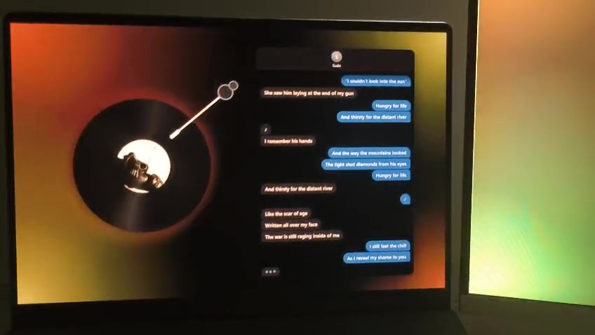
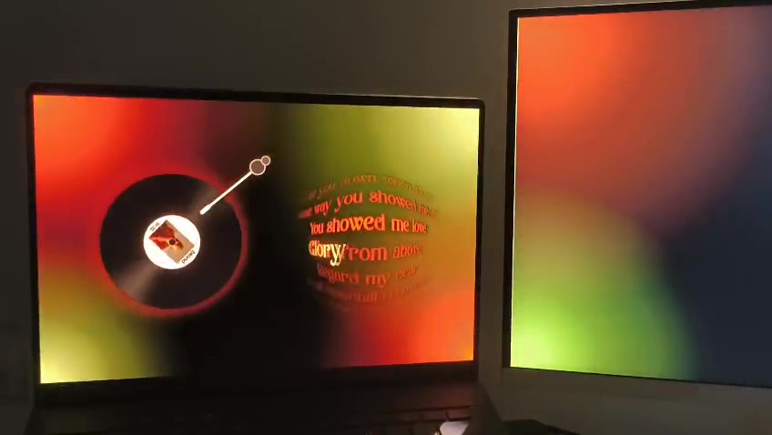
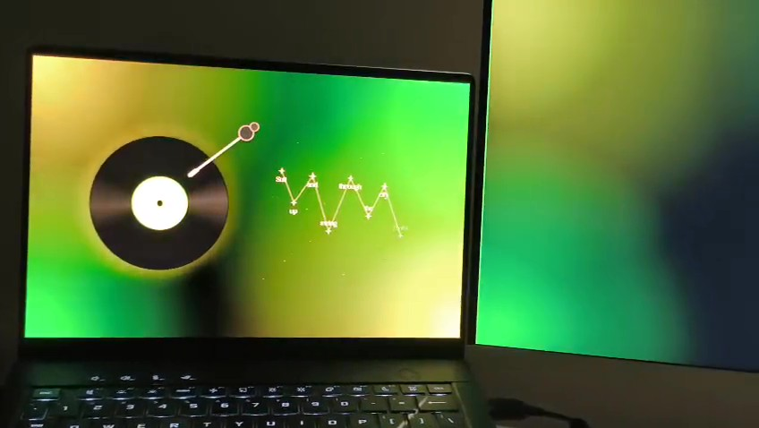
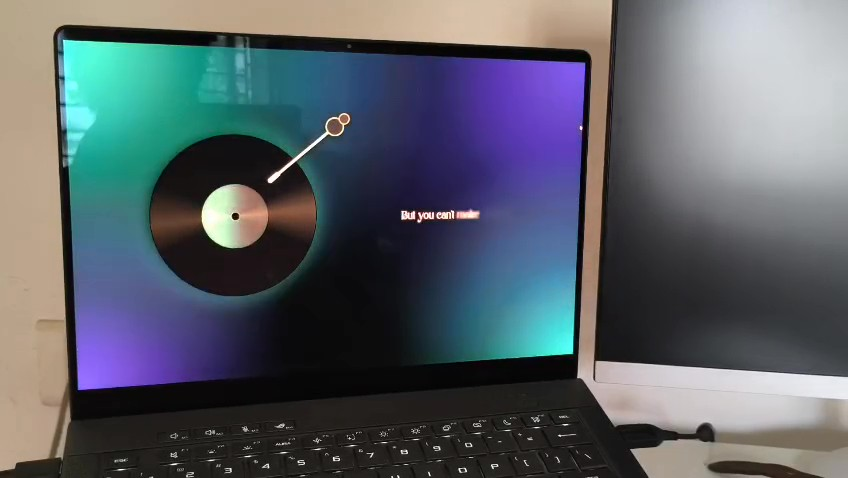

Music-Reactive Edge Glow
Real-time 64-band FFT audio analysis wraps all 4 edges of any selected screen in ambient light — across 6 light sculptures from crisp borders to Aurora curtains and spectrum bars.
HALO // WINDOWS DESKTOP AMBIENT ENGINE · V6.2.0
Every monitor edge comes alive with 64-band music-reactive light, 21 synced lyric engines, and a spinning desktop turntable — reading Spotify, Apple Music, or your browser automatically.
Halo-Setup-6.2.0.exenpm start)SmartScreen note: Community builds are not code-signed yet. If Windows SmartScreen says unknown publisher, choose More info → Run anyway. Cleanly uninstalls anytime from Windows Settings → Apps.
Developer quick-start: Run npm install then npm start (if Electron needs a binary fix, run npm run fix-electron).
Halo sits unobtrusively in your Windows system tray, hooks directly into Windows Media Controls (SMTC), and brings three unified visual layers to every display you connect.
Real-time 64-band FFT audio analysis wraps all 4 edges of any selected screen in ambient light — across 6 light sculptures from crisp borders to Aurora curtains and spectrum bars.
Pulls line-synced lyrics automatically from LRCLIB with word-length interpolation, powering 4 distinct visual families from kinetic WebGL lenses to interactive lock-screen cards.
Extracts cover art from Windows with an iTunes fallback and presses it onto 6 turntable & disc players — complete with smooth tonearm drops on play and realistic spin-down on pause.
Switch Halo's window layering and spatial editing behavior live from the settings sidebar or system tray without interrupting your music.
A lightweight Win32 Z-order helper (zorder.ps1) pins Halo's glow, lyrics, and vinyl directly behind every open window so your wallpaper becomes a living stage.
Elevates Halo cleanly over full-screen windows and apps while keeping pointer events 100% click-through — zero stray clicks while working or gaming.
Drag lyrics and the record onto any display, resize the stage via 8 corner/edge handles, scroll wheel to scale size, and Alt + Scroll to rotate — while other apps stay clickable.
Automatically ignores browser Shorts, Reels, and spoken clips unless they look like music tracks, and gently fades every overlay out after pause (default 10 s, up to never).
Recorded directly from real Windows sessions showing dual-monitor edge glow bleed, per-display filtering, and spinning cover art — toggle any reel between live video and keyframe screenshot.




Powered directly by Halo's real scene engine (scenes.js) and canvas glow algorithms. Pick any style, switch glow shapes, or test Dark vs. Light Native Design modes.
Click any glow sculpture or turntable deck below to pair it live with the simulator above.
Tune thickness (1–60 px), spread (0.1×–5×), quiet idle glow, album hue extraction, rainbow cycling, or two custom colors — per monitor.
Pulls cover art from Windows or iTunes, smoothly drops the tonearm when tracks begin, and spins smoothly to rest on pause.
Every style automatically adapts to a tuned box size until you drag the 8 resize handles yourself.
0–8 lines before and 0–8 lines after the active lyric, with optional distance blur.-8000 ms to +8000 ms in 50 ms steps.
Installed copies check GitHub Releases in the background when enabled, or you can run directly from source and build Halo-Setup-6.2.0.exe yourself in two commands:
git clone https://github.com/arvgdhi/HaloVisual.git && cd HaloVisual && npm install && npm start
npm run dist